מיתוג בית קפה נתקע כמעט תמיד בתפריט: עוד לאטה, עוד טעם עונתי, עוד מחיר על הלוח. CHASEN°, עולם מותג קונספט בדיוני של בר מאצ׳ה שבניתי בסטודיו, יוצא מהתפריט בהחלטה אחת: מאצ׳ה לא מזמינים. מרכיבים. מההחלטה נגזר סמל שהוא לא לוגו אלא חפץ, המטרפה, והוא עובר מהסרט באתר, דרך אטלייה שבו הלקוחה מרכיבה את הכוס שלה, אל סדנה של תשעים דקות שבה היא לומדת להחזיק את המטרפה בעצמה ויוצאת איתה הביתה. בעמוד הזה: שש השכבות של העולם עם הנכסים האמיתיים שלו, למה הסדנה היא הלב של המותג ולא הכנסה צדדית, ומה זה אומר לבית הקפה שלך.
הלקוחה והמקום
CHASEN° הוא מותג שלא קיים. זה עולם מותג קונספט בדיוני: הבר, המארחת, הכוסות והסדנה נוצרו בסטודיו כדי לבדוק החלטה אחת עד הסוף. אבל השאלה שהוא עונה עליה אמיתית מאוד, ואני שומעת אותה מבעלות בתי קפה ובוטיקים של משקאות: “הקפה שלי טוב, המקום יפה, ובכל זאת אני עוד בית קפה ברחוב. איך יוצאים מזה בלי להוסיף עוד מנה לתפריט?”
תחשבי על רחוב עם שלושה בתי קפה. כולם מגישים לאטה, כולם הוסיפו מאצ׳ה בשנתיים האחרונות, ולכולם יש צמח בפינה ושלט ניאון עם משפט חמוד. הלקוחה בוחרת לפי מה שנשאר: מרחק, תור, מחיר. זו טבלת השוואה, גם אם אף אחד לא כתב אותה. ובר מאצ׳ה הוא המקרה הכי קיצוני: המוצר נראה כמעט זהה בכל מקום, כוס ירוקה על חלב.
מאצ׳ה לא מזמינים. מרכיבים.
זו ההחלטה. שימי לב מה היא לא אומרת: לא “איכותי”, לא “יפני אותנטי” ולא מילה על מחיר. היא אומרת מה קורה כאן ולא קורה בבר הסמוך: הלקוחה היא חלק מההכנה. ומהרגע שזה ברור, ברור גם מה המותג צריך לתת לה ביד.
מה זה עולם מותג, דרך CHASEN°
עולם מותג הוא לא לוגו ולא פלטה. הוא שכבת החלטה: סט חוקים קצר שקובע מה אף פעם לא משתנה, מה מותר לשנות, ואיזו טעות תשבור הכול. ב-CHASEN° יש שלושה חוקים, והם נגזרים ישר מההחלטה:
- מה אף פעם לא משתנה: המטרפה.היא בשם (chasen היא מטרפת הבמבוק היפנית שבה מקציפים מאצ׳ה), בסרט, על השקית, ובידיים של מי שמכינה. בלי מטרפה, זה לא CHASEN°.
- מה מותר לשנות: כל מה שבכוס.חמישה טעמים, קר או חם, קצפת או שוקולד על הדפנות. כל צירוף הוא משקה עם שם משלו, והעולם לא זז.
- הטעות שהייתה שוברת את העולם: כוס מוכנה מהלוח.ברגע שהלקוחה רק מצביעה על שורה בתפריט ומחכה, ההבטחה נשברת, והבר חוזר להיות עוד בר מאצ׳ה עם מחיר.
שלושה חוקים ושש שכבות. והשכבה שמחזיקה את כולן היא זו שרוב בתי הקפה בכלל לא חושבים עליה כמיתוג: הסדנה.
שכבה 1: La Cérémonie, שלושה מהלכים
העולם נפתח בסרט של שלושה פרקים. La Poudre, האבקה בקערת אבן. Le Chasen, המטרפה שמקציפה. Le Verre, המזיגה על חלב קר בכוס גבוהה. ומתחת לשלושתם משפט אחד: “שלושה מהלכים, אלף כוסות. הטקס תמיד זהה. התוצאה אף פעם לא.”


La Poudre, Le Chasen, Le Verre. שלושה פרקים, ואותם שלושה מהלכים חוזרים בכל השכבות הבאות.
למה טקס ולא תמונת מוצר? כי טקס הוא מבנה, ומבנה אפשר להעביר מנקודת מגע לנקודת מגע בלי לאבד אותו. אותם שלושה מהלכים יופיעו באטלייה, בתפריט ובסדנה. תמונת מוצר יפה אפשר לצלם בכל בר. סדר של שלושה מהלכים שהלקוחה מכירה בעל פה שייך רק לבר אחד.
מה נשאר קבועשלושה מהלכים, תמיד באותו סדר: לנפות, להקציף, למזוג.
שכבה 2: La Métamorphose, אותה כוס בחמישה טעמים
“אותה כוס. חמישה טעמים. קר או חם.” בסרטון הקצר של השכבה הזאת כוס אחת עומדת במקום, ומה שבתוכה מתחלף: תות, הוג׳יצ׳ה, יוזו, כחול. קצפת עולה, שוקולד נוזל על הדפנות. ואז הכוס הופכת לספל חם, ויד לוקחת אותו מהבר.
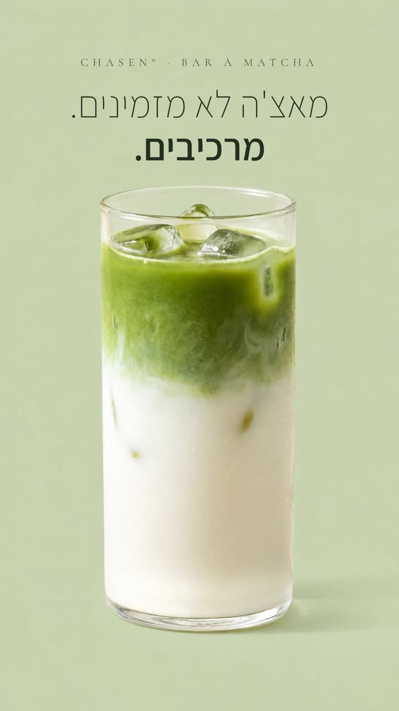
הבחירה החשובה כאן היא מה לא זז: הכוס, הזווית, האור, הבר. כשהכול קבוע חוץ מהמשקה, העין מבינה לבד את ההבטחה. זה לא תפריט של חמישה מוצרים. זה מוצר אחד שהלקוחה יכולה להפוך לשלה בחמש דרכים.
מה נשאר קבועהכוס, הזווית והאור. רק מה שבפנים מתחלף.
שכבה 3: L’Atelier, הכוס שלך
“הכוס הזאת עוד לא קיימת. עד שאת מכינה אותה.” כאן הסרט נגמר והלקוחה מקבלת את המטרפה, לפחות במסך. היא בוחרת טעם מתוך חמישה, מוסיפה קצפת, שוקולד, או הופכת את הכוס לחמה, והכוס משתנה מולה: הטעם נמזג פנימה, הקצפת עולה מלמטה, השוקולד נוזל מלמעלה.
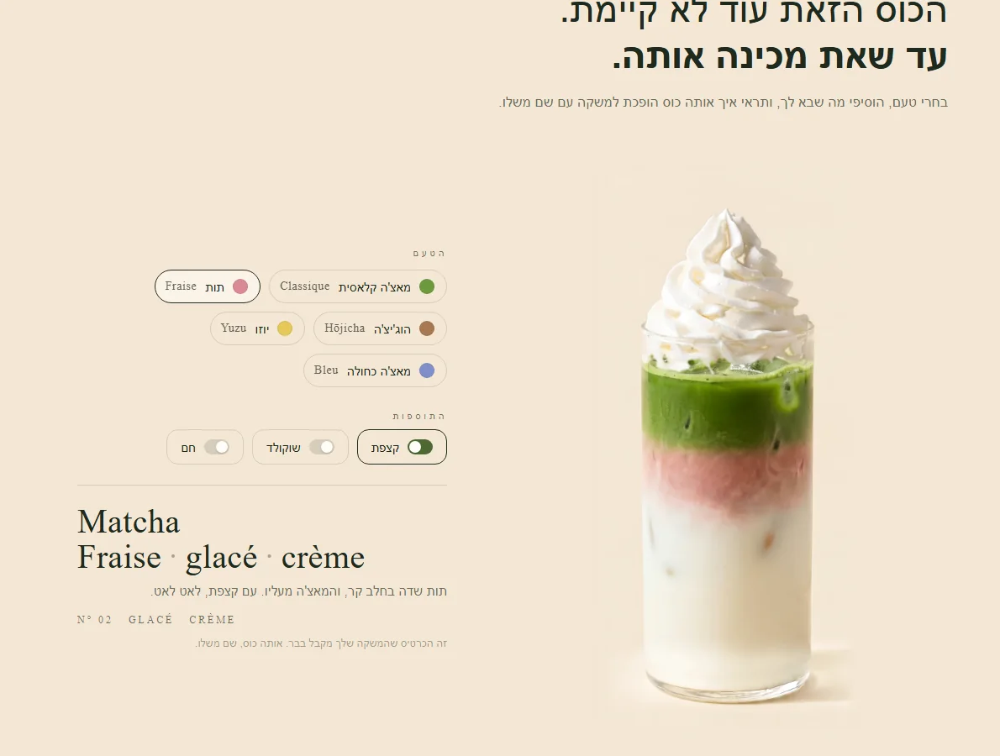
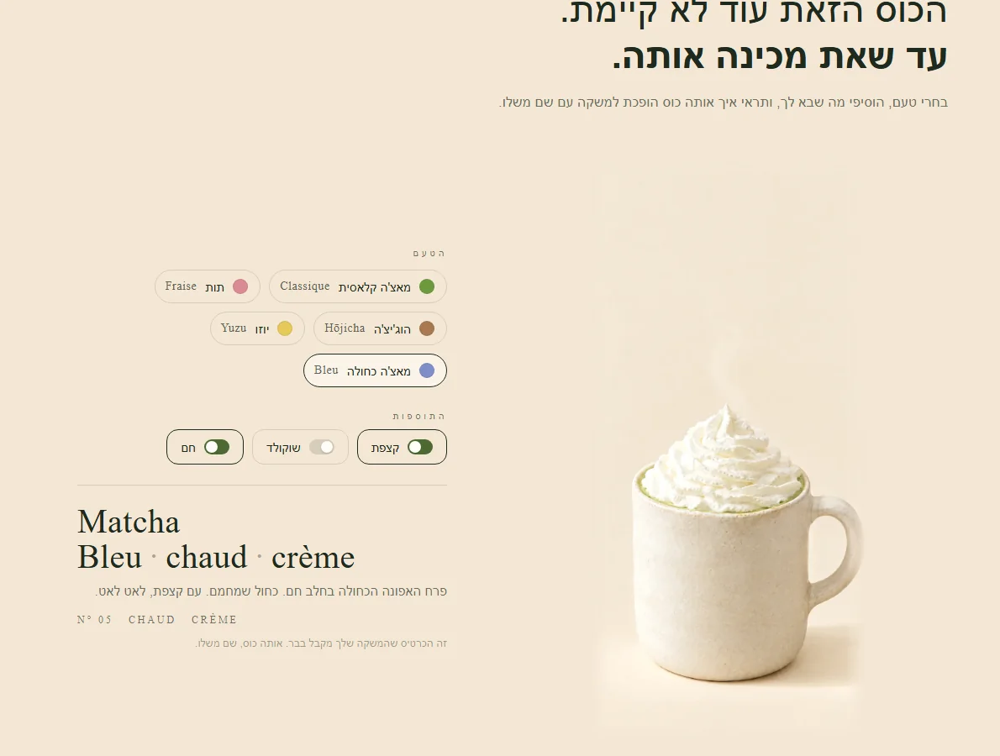
Matcha Fraise · glacé · crème, ו-Matcha Bleu · chaud · crème. אותה כוס, שני משקאות עם שם משלהם.
והחלק שהופך משחק לחוויית מותג: כל צירוף מקבל כרטיס. שם בצרפתית, שורה בעברית, ומספר. “זה הכרטיס שהמשקה שלך מקבל בבר. אותה כוס, שם משלו.” כשלמשקה יש שם שהיא הרכיבה, הוא כבר לא שורה בתפריט שאפשר להשוות למחיר בבר הסמוך. אותו עיקרון כתבתי עליו במאמר על ממשק שנגזר מהמותג: האינטראקציה היא לא קישוט, היא ההבטחה בפעולה.
מה נשאר קבועהכוס, והכרטיס שנותן לכל משקה שם.
שכבה 4: La Carte, חמישה טעמים ואינסוף כוסות
התפריט של CHASEN° קצר בכוונה. חמישה טעמים: Classique, מאצ׳ה טקסית על חלב קר. Fraise, תות שדה עם המאצ׳ה מעליו. Hōjicha, תה ירוק קלוי בלי מרירות, “למי שמאצ׳ה חזקה לה”. Yuzu, הדר יפני חמצמץ. ו-Bleu, פרח האפונה הכחולה. ואחריהם שורה אחת של תוספות.
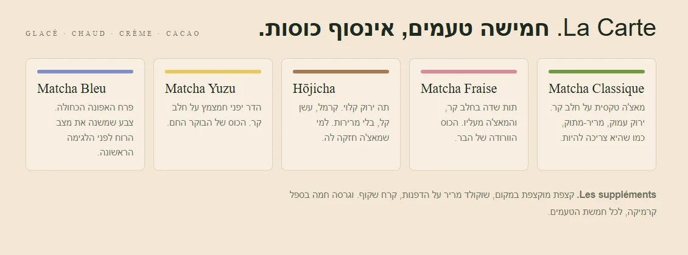
שימי לב לפסים הצבעוניים מעל כל טעם. הם לא עיצוב של תפריט, הם קוד: אותם חמישה צבעים יופיעו על השרוולים של חמש הכוסות, בערכת הבית ועל הקיר. ככה תפריט הופך ממחירון למערכת. מי שראתה פעם את הוורוד של Fraise תזהה אותו על כוס ברחוב, בלי לקרוא מילה. וזה בדיוק ההבדל בין מוצר שנמכר במחיר שלו למוצר שנמכר בשפה שלו.
מה נשאר קבועחמישה טעמים, חמישה צבעים. מה שמשתנה הוא רק הצירוף.
שכבה 5: La Leçon, הסדנה
וכאן הסיבה שבחרתי דווקא בעולם הזה לפרק החמישי. “את המטרפה לא קונים. לומדים להחזיק אותה.” זו כותרת הסדנה של CHASEN°: תשעים דקות בשבת בבוקר, שולחן עץ אחד, שש משתתפות ומארחת אחת. מנפות, מקציפות, מוזגות, ויוצאות הביתה עם המטרפה שהקציפו בה.
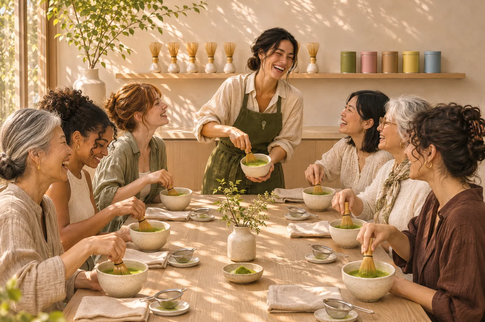
שלושת השלבים של הסדנה הם שלושת הפרקים של הסרט, הפעם בידיים. לנפות: למה מאצ׳ה טקסית לא נשפכת לקערה כמו שהיא. להקציף: תנועת ה-M מהשורש, בלי לגעת בתחתית, עשרים שניות ולא יותר. למזוג ולבחור: על חלב קר, ואז אחד מחמשת הטעמים. “הכוס הראשונה שלך עם שם משלה.” המארחת, מאיה, אומרת את זה במשפט אחד: “אני לא מלמדת מתכון. אני מלמדת תנועה של יד.”
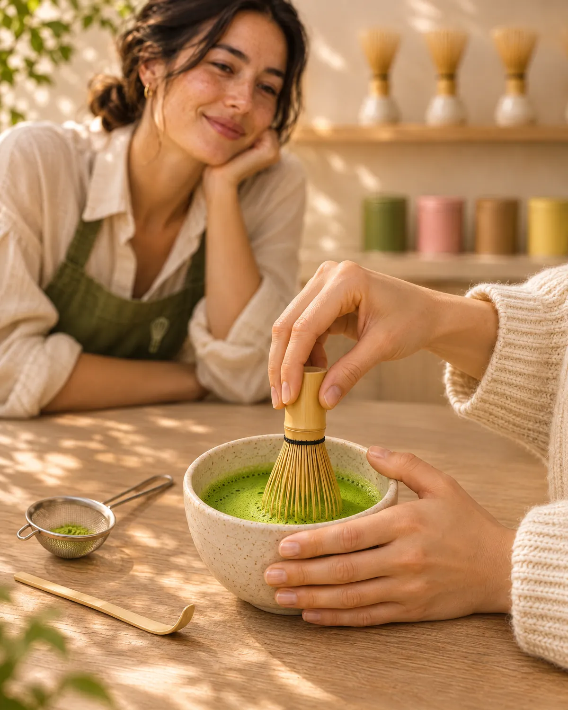

10:40 · La main, ו-11:30 · Le cadeau. המטרפה עוברת מהבר לידיים, ומהידיים הביתה.
ההרשמה היא חלק מהחוויה
עמוד סדנה רגיל הוא תאריך, מחיר וכפתור. בעמוד של CHASEN° רואים קודם את המקום המוכן: קערה, מטרפה, מקלון, מסננת ופחית ירוקה על השולחן. כשבוחרים תאריך, השולחן מראה כמה כיסאות נשארו, וכשמוסיפים חברה, עוד כיסא נצבע. ובסוף לא מגיע “תודה, נרשמת”, אלא כרטיס מקום עם השם, התאריך ומספר הכיסא, ושורה אחת: “המטרפה כבר מחכה על השולחן.”
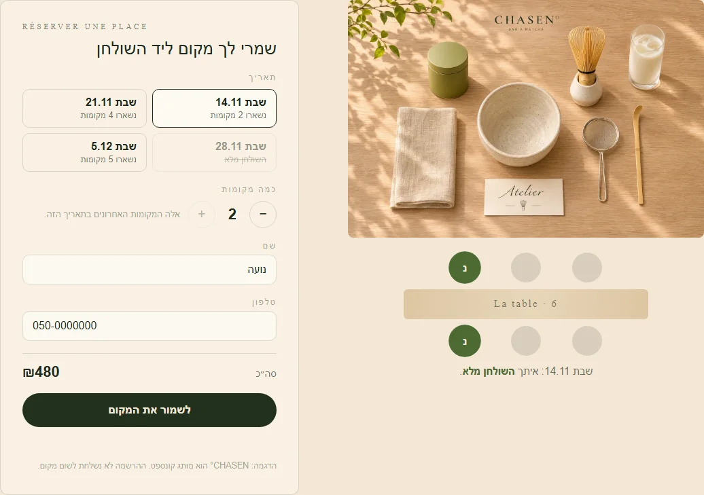
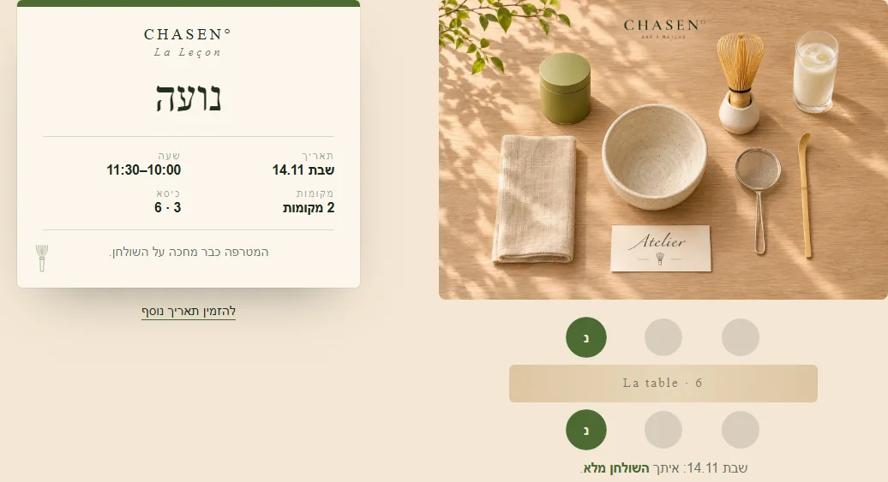
Réserver une place. השולחן מתמלא, וכרטיס המקום נולד עם השם.
למה הסדנה היא המותג, ולא הכנסה צדדית
רוב בתי הקפה שמעבירים סדנאות מתייחסים אליהן כאל אירוע: תאריך בסטורי, מחיר, עשר משתתפות, ונגמר. ב-CHASEN° הסדנה היא ההבטחה בגוף ראשון. “מאצ׳ה לא מזמינים, מרכיבים” כתוב על הקיר, מוצג בסרט, ומשוחק באטלייה, אבל רק בסדנה הוא קורה באמת. ושלושה דברים קורים שם שלא קורים בשום נקודת מגע אחרת:
- המותג יוצא הביתה. המשתתפת לא לוקחת איתה פלייר. היא לוקחת את החפץ שהוא הסמל של המותג, ומשתמשת בו במטבח שלה. כל בוקר שבו היא מקציפה, CHASEN° שם.
- הפנים של המותג מקבלות שם. מאיה היא לא “המדריכה”, היא “המטרפה של CHASEN°”. לקוחה שלמדה ממנה תנועת יד תחזור לבר כדי לראות אותה שוב, לא כדי לקנות עוד כוס.
- התוכן נוצר לבד, ובשפה הנכונה. השולחן, הקערות, כרטיסי המקום והמטרפה הם הסט של המותג, כך שכל תמונה שמשתתפת מעלה נראית כמו CHASEN°, גם בלי תיוג.
המבחן פשוט: אם אפשר להעביר את הסדנה שלך כמו שהיא לבית הקפה הסמוך, היא אירוע. אם היא נבנתה מההבטחה שלך, מהמהלכים, מהחפץ ומהשפה, היא נקודת מגע. ונקודת מגע כזאת שווה יותר מכל פוסט, כי היא היחידה שבה הלקוחה חווה את ההבטחה בעצמה, ולא רק שומעת עליה.
מה נשאר קבועשלושת המהלכים, המטרפה ביד, והשם על כרטיס המקום.
שכבה 6: Sans le nom, מכסים את השם
השכבה האחרונה בודקת את כל השאר. “מכסים את השם. המטרפה נשארת.” באתר יש מתג אחד, ולחיצה עליו מורידה את השם משש נקודות מגע: חמש הכוסות, ערכת הבית, קיר המטרפות, הכוס עם הכרטיס, השקית והכוס ברחוב. הכלל של העולם: מכסים את השם, ונשארים לפחות שלושה קודים.


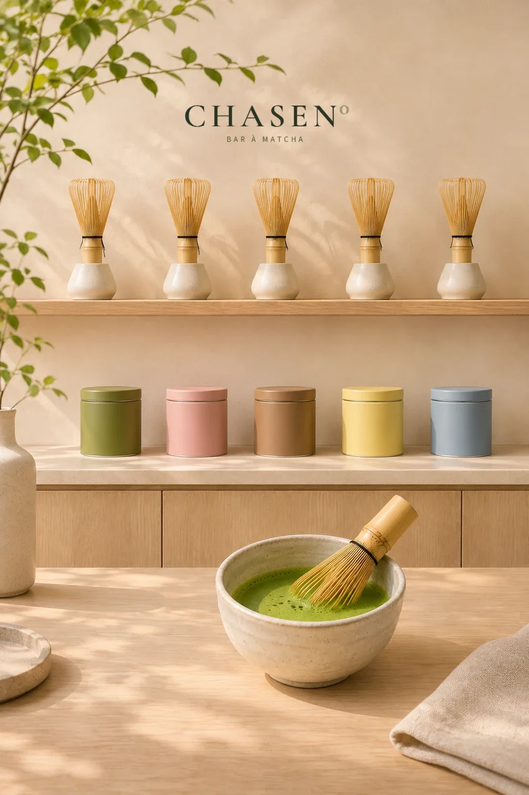
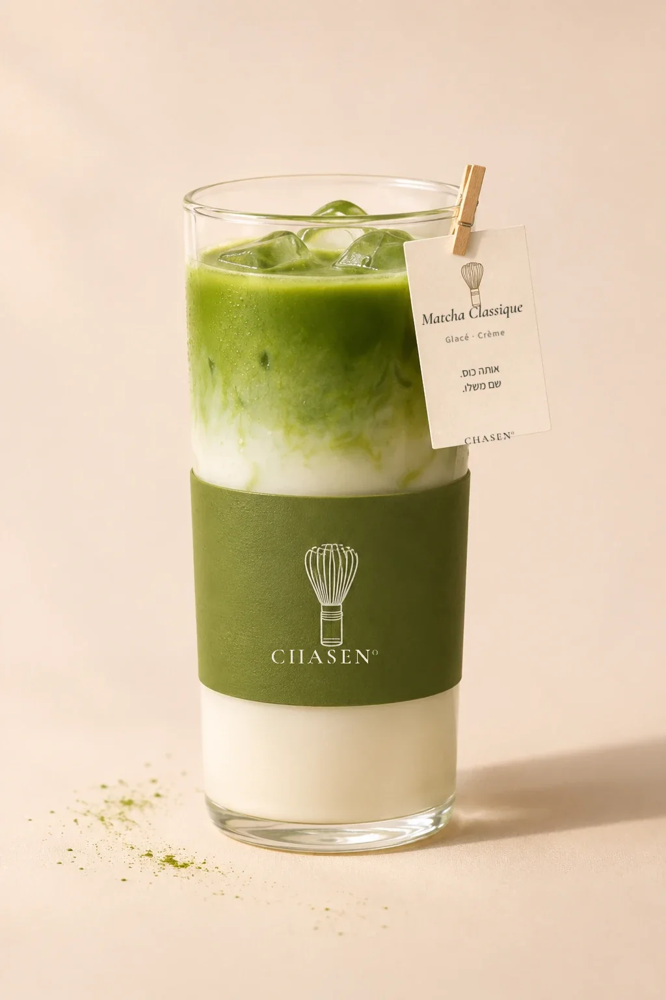
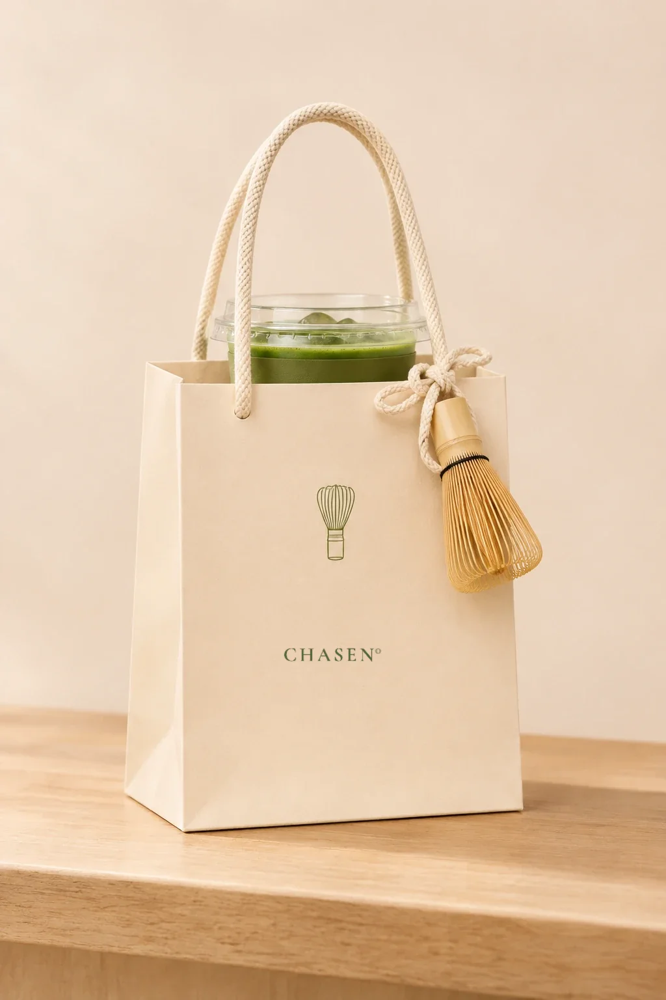
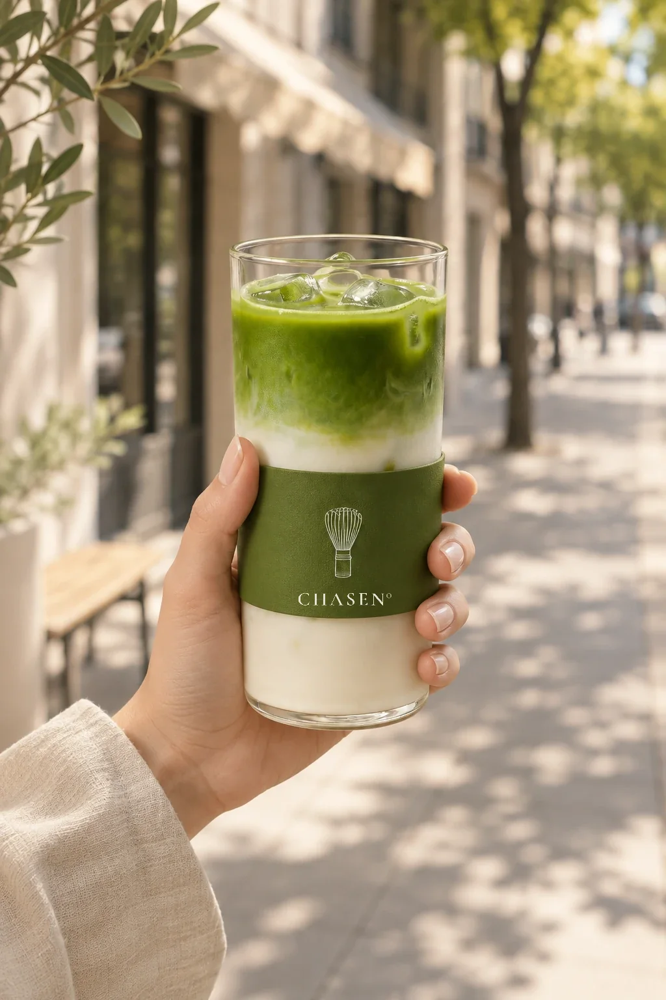
Les Cinq, Le Coffret, Le Mur, La Carte, Le Sac, À emporter. באתר, מתג אחד מוריד מכולן את השם.
ומה נשאר כשהשם יורד? המטרפה, חמשת צבעי הטעמים, הכוס השכבתית וקרם חם. השקית היא הדוגמה הכי חזקה: קשורה אליה מטרפה אמיתית. מי שעוברת ברחוב לא צריכה לקרוא שום דבר כדי לדעת מאיפה היא יצאה. אם המותג שלך עובר את המבחן הזה רק כשהלוגו גלוי, כדאי לבדוק את שבעת הסימנים שהמותג נמצא בטבלת השוואה.
מה נשאר קבועהמטרפה. היא הדבר היחיד שלא משתנה בבר, ולכן היא נשארת גם כשהשם יורד.
שש נקודות מגע, טבלה אחת
| נקודת מגע | מה היא עושה | מה נשאר קבוע |
|---|---|---|
| La Cérémonie | קובעת את הטקס שכל השאר חוזר אליו | שלושה מהלכים, באותו סדר |
| La Métamorphose | מראה שמוצר אחד הוא אינסוף משקאות | הכוס, הזווית, האור |
| L’Atelier | נותנת ללקוחה להרכיב, ולמשקה שם | הכוס והכרטיס |
| La Carte | הופכת תפריט למערכת של צבעים | חמישה טעמים, חמישה צבעים |
| La Leçon | מעבירה את ההבטחה לידיים ומוציאה אותה הביתה | המהלכים, המטרפה, כרטיס המקום |
| Sans le nom | בודקת שהמותג מזוהה בלי השם | המטרפה, הצבעים, הכוס השכבתית |
קראי את העמודה האחרונה מלמעלה למטה. זו ההגדרה הכי פשוטה שיש לי לעולם מותג: רשימת הדברים שלא משתנים כשעוברים מנקודת מגע לנקודת מגע. ב-ELVÉA°, הפרק הקודם בסדרה, הדבר שלא משתנה היה קו. ב-CHASEN° הוא חפץ שאפשר להחזיק ביד. ובשניהם הוא לא צבע ולא לוגו.
מה זה אומר לבית הקפה שלך
CHASEN° בדיוני, אבל הבעיה שהוא פותר אמיתית. בית קפה הוא אחד העסקים הכי קלים להשוואה: אותם משקאות, אותן מכונות, ותפריט שהלקוחה יכולה לקרוא מבחוץ. כשהמותג נגמר בכוס, נשאר להשוות רק את הכוס. וכשהלקוחה נכנסת, מסתכלת ולא חוזרת, זה בדרך כלל לא בגלל הקפה.
אי אפשר להשוות טקס שלמדת לעשות בעצמך למחיר של כוס.
אז מה עושים עם זה? שלוש שאלות, אותן אני שואלת בשיחות אבחון עם בעלות בתי קפה ועסקי משקאות:
- מה הלקוחה עושה אצלך שהיא לא עושה בבית הקפה הסמוך? לא מה את מגישה, אלא מה קורה לה. ב-CHASEN° היא מרכיבה. אצלך אולי היא בוחרת את הפולים, יושבת ליד הקלייה, או מקבלת את אותה כוס בכל בוקר בלי לבקש.
- מה החפץ שלך? משהו אחד שחוזר בכל מקום ויכול לצאת איתה הביתה: מטרפה, ספל, חותמת, כפית. לוגו מודפס על כוס חד־פעמית הוא לא חפץ. מטרפה קשורה לשקית היא כן.
- הסדנה, הטעימה או האירוע שלך: נבנו מההבטחה, או צורפו אליה? אם אפשר להעביר אותם כמו שהם לכל בית קפה אחר, הם הכנסה צדדית. אם הם עשויים מהמהלכים ומהשפה שלך, הם הנקודה שבה הלקוחה הופכת לחלק מהמותג.
ואם את רוצה לראות בית קפה אחר מהסטודיו, עם החלטה אחרת לגמרי: Crema° לא נותן להרכיב, הוא נותן לבחור: חוגה של שבע קפסולות, ובסוף כרטיס “הבוקר שלך”. שני בתי קפה, שתי הבטחות, ואף אחד מהם לא נכנס לטבלה. ההבדל בין למכור מוצר לבין למכור את הערך שלו מתחיל בדיוק בשאלה הזאת.
איך זה נבנה
בקצרה, כי יש על זה מאמר שלם. ההבטחה נכתבה קודם, וממנה השם. באטלייה ההחלטה החשובה הייתה מה לא לעשות: לא ארבעים תמונות של כל צירוף, כי ארבעים כוסות שנוצרו בנפרד הן ארבעים כוסות שונות במעט, וברגע שהכוס זזה פיקסל האשליה נשברת. במקום זה נוצרה כוס מאסטר אחת, חמשת הטעמים נוצרו כעריכה על אותה תמונה בדיוק, והקצפת והשוקולד נחתכו כשכבות שקופות שיושבות נכון על כל טעם. הסרט נוצר בווידאו AI, פרק אחד מכל פריים פתיחה, על אותו סט ואותו אור כמו הכוס. המארחת נוצרה פעם אחת, וכל תמונות הסדנה נבנו ממנה, כדי שבכל פריים זו אותה אישה באותו בר. הסדר הזה, DNA לפני כלים, הוא אותו סדר בכל עולם.
עולמות שכנים
CHASEN° הוא הפרק החמישי בסדרת “סיפורי עולמות”. ארבעת הפרקים הקודמים פירקו מותג טיפוח טבעי, מותג סרום, בוטיק שוקולד ובית מקרונים, ועוד בית קפה מהסטודיו קרוב ברוח ושונה בסיפור:
שאלות נפוצות על מיתוג בית קפה
מה זה מיתוג בית קפה בגישת עולם מותג?
מיתוג שמתחיל מהחלטה על מה קורה אצלך ולא קורה בבית הקפה הסמוך, ולא מהתפריט או מהעיצוב. ב-CHASEN° ההחלטה היא “מאצ׳ה לא מזמינים, מרכיבים”: הלקוחה היא חלק מההכנה. מההחלטה נגזרים חפץ אחד שלא משתנה (המטרפה), טקס של שלושה מהלכים, אטלייה שבו היא מרכיבה את הכוס, תפריט קצר של חמישה טעמים, סדנה, ושש נקודות מגע שמזהים גם בלי השם.
למה סדנה היא חלק מהמותג של בית קפה ולא רק הכנסה צדדית?
כי בסדנה ההבטחה עוברת מהקיר לידיים. ב-CHASEN° הסדנה בנויה משלושת המהלכים של הטקס, מארחת אחת שהיא הפנים של המותג, וכרטיס מקום עם השם של המשתתפת. היא יוצאת הביתה עם המטרפה, כך שהמותג ממשיך במטבח שלה. סדנה שאפשר להעביר כמו שהיא לכל בית קפה אחר היא אירוע. סדנה שנבנתה מההבטחה היא נקודת מגע.
איך בונים עמוד סדנה שמוכר חוויה ולא תאריך?
מראים את השולחן לפני שמבקשים פרטים. בעמוד של CHASEN° רואים את המקום המוכן, את שלושת המהלכים ואת המארחת, השולחן מראה בזמן ההרשמה כמה כיסאות נשארו, ובסוף ההרשמה נולד כרטיס מקום עם השם. המשתתפת לא קונה שעה בשבת, היא שומרת לעצמה מקום ליד שולחן מסוים.
האם בית קפה צריך אתר אינטראקטיבי כדי להיות עולם מותג?
לא. האטלייה של CHASEN° הוא דרך אחת להראות את ההחלטה, לא תנאי. מה שצריך הוא שההחלטה תחזור בכל מקום: בתפריט, בכוס, בשקית, בפוסט ובאירוע. אם ההחלטה של בית הקפה שלך היא “הלקוחה מרכיבה”, אז גם בלי אתר היא תרגיש את זה בדלפק.
איך נבנה עולם המותג של CHASEN°?
CHASEN° הוא עולם מותג קונספט בדיוני של Brand Worlds Studio, לא בר מסחרי. ההבטחה נכתבה קודם. ממנה נגזרו השם, סרט של שלושה פרקים בווידאו AI על אותו סט, אטלייה שמבוסס על תמונת מאסטר אחת של כוס שכל הטעמים והתוספות נבנו עליה, מארחת שנוצרה פעם אחת וכל תמונות הסדנה נבנו ממנה, ושש נקודות מגע בשתי גרסאות, עם השם ובלעדיו.
CHASEN° הוא הפרק החמישי בסדרת “סיפורי עולמות”: בכל פרק אני לוקחת עולם אחד מהארכיון ומפרקת אותו לשכבות, עם הנכסים האמיתיים שלו בעמוד. התמונות, הכוסות ונקודות המגע כאן הם אותם קבצים שמריצים את העולם עצמו, ושני צילומי המסך מהאטלייה ומההרשמה צולמו מהעמוד החי. בחרתי בו עכשיו בגלל הסדנה: זה העולם הראשון בסטודיו שבו ההבטחה לא רק נראית, היא עוברת לידיים. וזו התשובה הכי מוחשית שיש לי לשאלה “מה זה עולם מותג”.
מה המטרפה של המותג שלך?
באבחון פער המותג, 30 דקות ובלי עלות, נשים את התפריט, הכוס, האתר והפוסטים על שולחן אחד, נסתיר את השם, ונראה מה עוד מחזיק את המותג. כתבי לי “מטרפה” בוואטסאפ ונתחיל משם.
לאבחון פער המותג ←